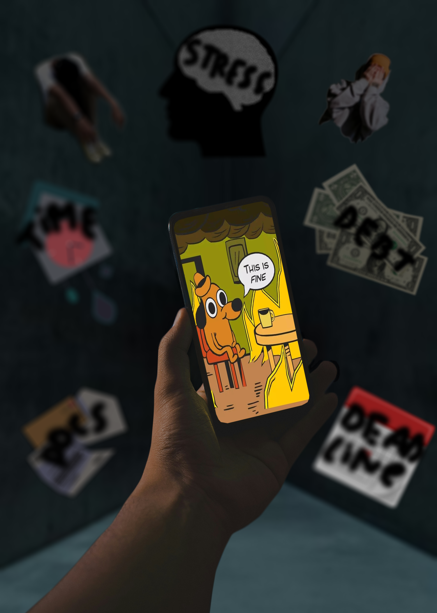
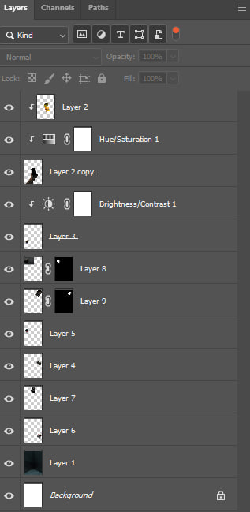

Homework #4

In this photomontage I am exploring the social issue of digital escapism. It's about how people more and more use their phones as an escape from overwhelming real life problems instead of confronting them. The hand in the center holds a phone that glows with the iconic "This is Fine" dog meme. I chose this because for me it symbolized ironic image of avoidance, that everything is fine (it's not). The floating symbols that show problems surround us in the dark and oppressive space.
I built the entire composition non destructively in Photoshop to meet the assignment requirements. I used a clipping masks and layer masks for different objects and adjustment layers (Hue/Saturation and Brightness/Contrast) for color control. Also used field blur effect. Images were taken from copyright safe sites like Pixabay and Unsplash.
